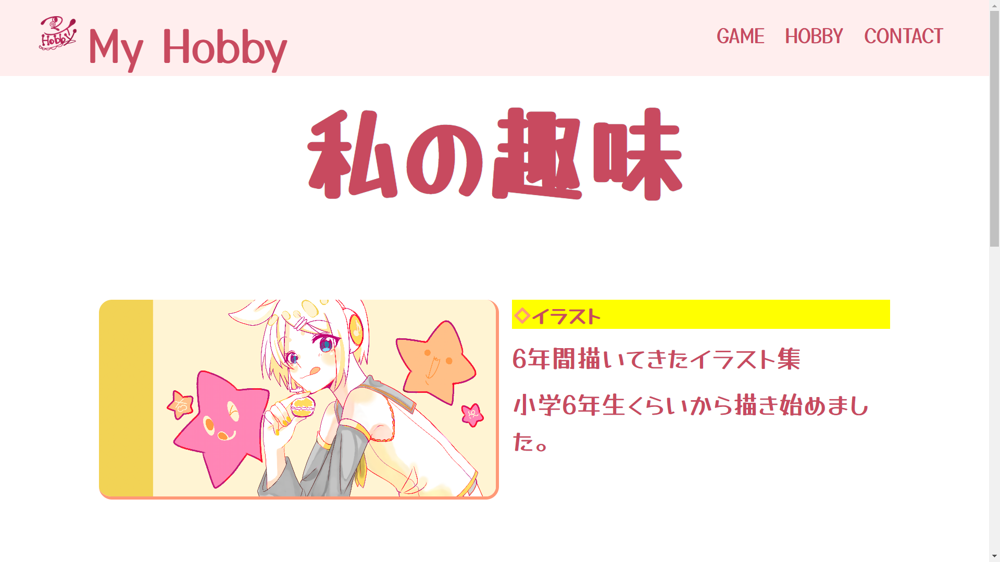
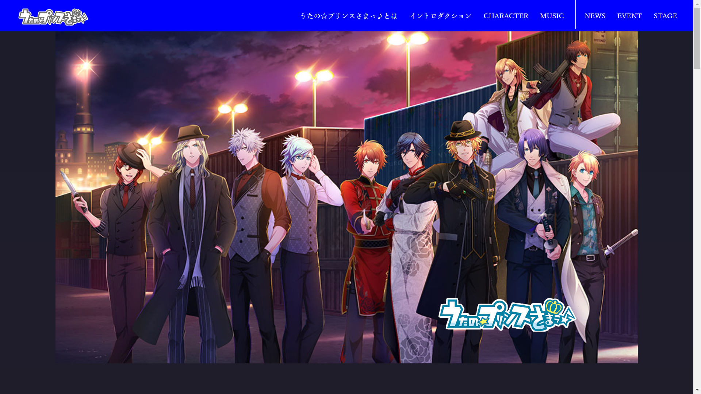

授業で作成したもの

趣味紹介サイト(一年次：リメイク版)
趣味サイトは学校の課題で一年生の時に作成したものです。
TOP画面はシンプルに何の趣味をしているか分かるようにしました。
そのまま載せるのは見るに堪えなかったため、リメイクしました。
リメイクしたところとしては、レイアウトが崩れていたところの修正です。
画像が中央に来ていなかった部分などを修正いたしました。
ヘッダー部分のロゴは自作しました。デザインに自信はありませんが個性を出したいと思いこのロゴを作成しました。

プロモーションサイト(二年次)
二年生の冬辺りからWebデザインの授業の課題として取り組みました。
コンセプトとしては女性向けゲームを男性向けにプロモーションするサイトです。
男性向けということもありシックな色をメインカラーとして使用しました。
また、キャラクターや楽曲を知ってもらうという目的で作ったので、TOPページから飛べるリンクはその二つだけ
という構成にしました。楽曲はApple Musicのプラグインを使用し、再生ボタンを押すと再生するようになってます。
また、フッターには会社のサイトにに飛ぶリンクやアプリをダウンロードできるプラグイン等をしようしました。
反省点としては、シンプルな作りにしすぎたと感じました。
イベントページでは過去のイベントの紹介をしているのですが、写真やイラストなどを使い視覚的にも分かるように
すべきだったと思いました。